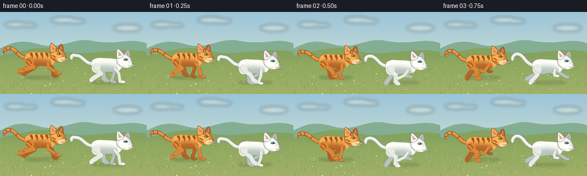
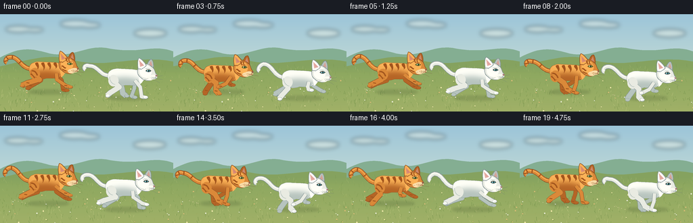

CODING AGENTS AS PIXEL WORLD MODELS
traex/GPT-6.1-Sol · instance_preservation_0004
点击播放 · 原生 RGB 像素
逐轮保存的候选
回放视频、检查图与代码变化。
每份候选均可单独播放。实际图片检查记录在下方工具轨迹中。
候选 01播放与检查图
点击播放 · 原生 RGB 像素


展开代码变化
--- 上一保存版本
+++ 本次保存版本
@@ -0,0 +1,193 @@
+from pathlib import Path
+import math
+import numpy as np
+from PIL import Image, ImageDraw, ImageFilter
+import artifact_io
+
+ROOT=Path(__file__).resolve().parent
+W,H,S=256,144,4
+rng=np.random.default_rng(37)
+
+def cubic(p0,p1,p2,p3,n=18):
+ return [((1-t)**3*p0[0]+3*(1-t)**2*t*p1[0]+3*(1-t)*t*t*p2[0]+t**3*p3[0],(1-t)**3*p0[1]+3*(1-t)**2*t*p1[1]+3*(1-t)*t*t*p2[1]+t**3*p3[1]) for t in np.linspace(0,1,n)]
+
+def path(start,segs):
+ pts=[start]; p=start
+ for a,b,c in segs:
+ pts+=cubic(p,a,b,c)[1:];p=c
+ return pts
+
+class Pen:
+ def __init__(self,im,origin=(0,0),scale=1):
+ self.im=im;self.d=ImageDraw.Draw(im);self.ox,self.oy=origin;self.sc=scale
+ def pts(self,pts): return [((self.ox+x*self.sc)*S,(self.oy+y*self.sc)*S) for x,y in pts]
+ def poly(self,pts,fill): self.d.polygon(self.pts(pts),fill=fill)
+ def line(self,pts,fill,width=1): self.d.line(self.pts(pts),fill=fill,width=max(1,round(width*self.sc*S)),joint='curve')
+ def ell(self,b,fill,outline=None,width=1):
+ x,y,x2,y2=b;self.d.ellipse(((self.ox+x*self.sc)*S,(self.oy+y*self.sc)*S,(self.ox+x2*self.sc)*S,(self.oy+y2*self.sc)*S),fill=fill,outline=outline,width=max(1,round(width*self.sc*S)))
+ def curve(self,start,segs,fill,width): self.line(path(start,segs),fill,width)
+ def shape(self,start,segs,fill,outline=None,width=.65):
+ ps=path(start,segs);self.poly(ps,fill)
+ if outline:self.line(ps+[ps[0]],outline,width)
+
+# Stable seeds for an infinite scrolling meadow.
+grass=[(rng.uniform(0,512),rng.uniform(76,145),rng.uniform(1.4,5.8),rng.uniform(-2,2),int(rng.integers(0,4))) for _ in range(950)]
+flowers=[(rng.uniform(0,512),rng.uniform(97,144),rng.uniform(.45,1.0),rng.choice([0,1,2])) for _ in range(75)]
+
+def background(t):
+ yy=np.linspace(0,1,H*S)[:,None,None]
+ top=np.array([156,197,217]);bot=np.array([224,234,209])
+ a=top[None,None,:]*(1-yy)+bot[None,None,:]*yy
+ a=np.broadcast_to(a,(H*S,W*S,3)).copy()
+ im=Image.fromarray(np.uint8(a));p=Pen(im)
+ # Soft, airy clouds.
+ cl=Image.new('RGBA',im.size);cp=Pen(cl)
+ for cx,cy,r in [(27,22,19),(51,23,13),(111,14,22),(132,16,16),(222,28,24)]:
+ cp.ell((cx-r-t*.3,cy-r*.25,cx+r-t*.3,cy+r*.25),(250,251,235,105))
+ cl=cl.filter(ImageFilter.GaussianBlur(S*3));im=Image.alpha_composite(im.convert('RGBA'),cl).convert('RGB');p=Pen(im)
+ p.shape((0,64),[((35,46),(49,52),(73,58)),((110,66),(128,43),(163,51)),((206,59),(227,44),(256,55)),((256,60),(256,79),(256,80)),((171,80),(40,80),(0,80)),((0,80),(0,70),(0,64))],(132,174,146))
+ p.shape((0,77),[((39,69),(67,58),(101,66)),((156,83),(196,59),(256,70)),((256,93),(256,144),(256,144)),((145,144),(70,144),(0,144)),((0,119),(0,92),(0,77))],(133,162,95))
+ # Shade the field smoothly, green at horizon to golden grass in foreground.
+ field=np.zeros((H*S,W*S,4),dtype=np.uint8)
+ for y in range(76*S,H*S):
+ q=(y/S-76)/68
+ field[y,:,:3]=np.array([139,167,94])*(1-q)+np.array([166,180,105])*q
+ field[y,:,3]=int(210*min(1,(y/S-76)/12))
+ im=Image.alpha_composite(im.convert('RGBA'),Image.fromarray(field)).convert('RGB');p=Pen(im)
+ cols=[(119,148,76),(155,172,97),(182,192,121),(132,158,85)]
+ for x,y,l,lean,col in grass:
+ x=(x-t*10*(.45+.55*(y-76)/68))%512-20
+ if -3<x<259:
+ p.line([(x,y),(x+lean,y-l)],cols[col],.32 if y<105 else .48)
+ for x,y,r,k in flowers:
+ x=(x-t*10*(.45+.55*(y-76)/68))%512-20
+ if -2<x<258:
+ p.line([(x,y+2),(x+.5,y-1)],(117,144,76),.4)
+ c=[(246,235,172),(232,236,211),(213,188,118)][k]
+ p.ell((x-r,y-r,x+r,y+r),c)
+ return im
+
+# One gallop: extension, forepaw landing, gathering, hindpaw push.
+front=[[(15,7),(28,16),(34,18)],[(22,8),(24,22),(29,23)],[(13,10),(9,21),(13,23)],[(7,8),(-1,12),(-5,13)],[(12,5),(13,9),(17,10)],[(21,4),(29,9),(35,12)]]
+hind=[ [(-11,7),(-28,12),(-37,16)],[(-9,8),(-23,17),(-27,21)],[(-5,8),(0,17),(7,21)],[(-8,7),(-8,19),(-4,23)],[(-17,8),(-26,18),(-30,23)],[(-20,6),(-30,11),(-38,15)] ]
+
+def pose(table,phase):
+ f=(phase%1)*len(table);i=int(f);a=f-i;a=a*a*(3-2*a)
+ return [tuple(np.array(table[i][j])*(1-a)+np.array(table[(i+1)%len(table)][j])*a) for j in range(3)]
+
+def cat(im,cx,cy,phase,white=False,scale=1):
+ bounce=-2.5*math.cos(2*math.pi*phase)
+ p=Pen(im,(cx,cy+bounce),scale)
+ if white:
+ edge=(129,145,146);base=(233,235,226);light=(255,255,247);shadow=(183,196,190);deep=(148,164,162);stripe=(210,216,208);muzzle=(254,253,242);iris=(79,158,178)
+ else:
+ edge=(139,78,35);base=(218,137,57);light=(251,178,87);shadow=(181,101,38);deep=(147,81,32);stripe=(162,85,29);muzzle=(250,220,168);iris=(131,164,69)
+ # Tail is rooted in the same hip through the entire gallop.
+ tail=path((-23,-9),[((-38,-9),(-40,-26+3*math.sin(phase*6.28)),(-53,-26+3*math.sin(phase*6.28))),((-61,-26),(-62,-19),(-59,-18))])
+ p.line(tail,edge,6.7);p.line(tail,base,5.2);p.line([(x,y-1) for x,y in tail],light,1.2)
+ if not white:
+ for i in [9,16,22,29]:
+ if i<len(tail)-1:
+ a=np.array(tail[i]);b=np.array(tail[i+1]);v=b-a;v=v/max(np.linalg.norm(v),.1);n=np.array([-v[1],v[0]])
+ p.line([a-n*2.3,a+n*2.3],stripe,1.8)
+ def leg(kind,offset,far):
+ tab=front if kind=='f' else hind
+ j=pose(tab,phase+offset);root=(14,-2) if kind=='f' else (-18,-1)
+ col=shadow if far else base
+ w=5 if kind=='f' else 7.5
+ chain=[root]+j
+ p.line(chain,edge,w+.9);p.line(chain,col,w)
+ # Narrow distal legs, joint caps, and soft oval paws.
+ p.line(j[1:],col,4.6)
+ for q in chain[1:-1]:p.ell((q[0]-w/2,q[1]-w/2,q[0]+w/2,q[1]+w/2),col)
+ x,y=j[-1];p.ell((x-2.5,y-2,x+4.6,y+2.6),edge);p.ell((x-2.2,y-1.8,x+4.2,y+2.2),shadow if far else (light if white else base))
+ if not far:
+ p.line([(x+1.1,y+.5),(x+1.3,y+1.9)],shadow,.45)
+ p.line([(x+2.7,y+.2),(x+2.9,y+1.5)],shadow,.45)
+ if not white:
+ x0,y0=j[1];p.line([(x0-2,y0-.4),(x0+2,y0+.4)],stripe,1.4)
+ leg('h',.12,True);leg('f',.15,True)
+ # Torso silhouette: tucked belly, broad hips, a lifted shoulder and neck.
+ torso=path((-26,-7),[((-26,-17),(-18,-20),(-8,-19)),((3,-18),(13,-19),(21,-16)),((26,-19),(28,-24),(32,-21)),((34,-16),(30,-6),(24,0)),((18,7),(8,5),(0,5)),((-10,9),(-23,7),(-26,-7))])
+ p.poly(torso,base);p.line(torso+[torso[0]],edge,.7)
+ # Light and shadow clipped precisely to the torso.
+ mask=Image.new('L',im.size);mp=Pen(mask,(cx,cy+bounce),scale);mp.poly(torso,255)
+ shade=Image.new('RGB',im.size,base);sp=Pen(shade,(cx,cy+bounce),scale)
+ sp.ell((-30,-25,31,3),light);sp.ell((-29,-7,26,15),shadow)
+ shade=shade.filter(ImageFilter.GaussianBlur(4*S*scale))
+ im.paste(shade,(0,0),mask)
+ p=Pen(im,(cx,cy+bounce),scale)
+ p.curve((-21,-15),[((-7,-19),(7,-16),(16,-16))],(255,254,239) if white else (255,192,108),.8)
+ if not white:
+ for x,h in [(-15,10),(-6,11),(3,10),(12,8)]:
+ p.shape((x-2,-17),[((x-2,-13),(x+3,-12),(x+1,-17+h)),((x+5,-11),(x+3,-15),(x+2,-18)),((x,-18),(x,-18),(x-2,-17))],stripe)
+ p.curve((-23,-4),[((-21,-1),(-18,0),(-18,3))],stripe,2)
+ p.curve((-20,-9),[((-18,-7),(-15,-6),(-14,-2))],stripe,2)
+ leg('h',0,False)
+ # Haunch blends into the upper hind leg.
+ p.ell((-25,-10,-10,7),base)
+ p.curve((-23,-8),[((-24,-1),(-19,4),(-15,4))],shadow,.8)
+ if not white:
+ p.curve((-22,-6),[((-17,-6),(-15,-2),(-14,1))],stripe,2)
+ p.curve((-24,-1),[((-21,0),(-19,3),(-18,5))],stripe,1.7)
+ leg('f',0,False)
+ # Chest fur and far ear, then face.
+ p.shape((21,-12),[((31,-14),(34,-9),(28,-3)),((25,0),(25,2),(21,4)),((22,-1),(18,-3),(21,-12))],light)
+ p.shape((31,-23),[((33,-28),(36,-34),(39,-33)),((42,-29),(42,-23),(41,-18)),((37,-18),(34,-21),(31,-23))],shadow,edge)
+ p.poly([(35,-25),(38,-31),(40,-23)],(213,161,151) if white else (205,135,105))
+ face=path((19,-20),[((22,-28),(34,-28),(39,-22)),((43,-20),(43,-16),(45,-12)),((48,-10),(47,-5),(41,-4)),((36,1),(26,-2),(23,-6)),((18,-9),(17,-15),(19,-20))])
+ p.poly(face,base);p.line(face+[face[0]],edge,.65)
+ p.ell((21,-24,39,-6),light)
+ # Near pointed ear, with a furry notched base.
+ p.shape((19,-19),[((18,-24),(18,-32),(20,-35)),((24,-34),(29,-28),(31,-24)),((29,-21),(26,-20),(23,-18)),((22,-20),(20,-18),(19,-19))],light,edge)
+ p.poly([(20.4,-31.6),(22,-22),(27.8,-24)],(225,165,158) if white else (214,136,111))
+ p.line([(21,-30),(22.2,-23),(25,-24)],(244,198,186) if white else (234,163,134),.6)
+ if not white:
+ p.curve((29,-25),[((28,-23),(30,-20),(31,-19))],stripe,1.7)
+ p.curve((33,-25),[((32,-22),(33,-20),(34,-19))],stripe,1.5)
+ p.curve((22,-13),[((25,-13),(25,-10),(28,-10))],stripe,1.9)
+ p.curve((23,-8),[((25,-8),(26,-6),(29,-6))],stripe,1.5)
+ # One sharp almond eye in side profile, a second faint far-eye at the brow.
+ p.shape((30,-15.9),[((32,-19),(36,-18.5),(38.5,-15.9)),((36,-13.8),(32.5,-13.7),(30,-15.9))],(65,66,48) if white else (93,70,32))
+ p.shape((31.1,-16),[((33,-17.9),(36.3,-17.3),(37.2,-15.9)),((35.3,-14.5),(32.8,-14.4),(31.1,-16))],iris)
+ p.ell((34,-17.4,35.2,-14.4),(24,42,37));p.ell((32.6,-17.1,33.6,-16.1),(255,255,247))
+ p.curve((30,-19),[((32,-20),(35,-20),(37,-18.7))],shadow,.65)
+ # Rounded muzzle, pink nose, mouth and long fine whiskers.
+ p.ell((35,-10,47,-3.5),muzzle)
+ p.ell((31,-8.5,42,-1.8),muzzle)
+ p.poly([(44.5,-10.2),(48.2,-9.1),(45.3,-7.5)],(168,112,109) if white else (142,88,72))
+ p.line([(45.3,-7.5),(44.7,-5.4),(41.4,-4.8)],edge,.65)
+ p.curve((44.7,-5.4),[((44.9,-4.6),(46,-4.8),(46.5,-5.3))],edge,.5)
+ for q in [(37,-6),(39,-6.8),(39,-4.9)]:p.ell((q[0]-.3,q[1]-.3,q[0]+.3,q[1]+.3),shadow)
+ whisk=(112,125,112) if white else (126,97,66)
+ for st,ct,en in [((39,-6),(47,-7),(55,-9)),((39,-5),(49,-4),(55,-3)),((38,-4),(46,-1),(51,2)),((34,-5),(29,-3),(26,-1))]:
+ p.curve(st,[(ct,ct,en)],whisk,.32)
+ # A few fine fur strokes retain a soft natural silhouette.
+ for x,y in [(23,-4),(25,-1),(20,1),(-23,-12),(-22,-9)]:
+ p.line([(x,y),(x-1.4,y+1.7)],light,.55)
+
+frames=[]
+for i in range(20):
+ t=i/4;im=background(t)
+ phase=i/6
+ ox=69+2.5*math.sin(i*.33);wx=184+2.5*math.sin(i*.33+.5)
+ oy=92;wy=101
+ # Contact shadows remain on the grass while the bodies rise and fall.
+ sh=Image.new('RGBA',im.size);sp=Pen(sh)
+ for x,y,ph in [(ox,oy,phase),(wx,wy,phase+.17)]:
+ sp.ell((x-27,y+20,x+34,y+26),(51,75,39,60))
+ sp.ell((x-16,y+21,x+26,y+25),(57,73,39,45))
+ sh=sh.filter(ImageFilter.GaussianBlur(2*S));im=Image.alpha_composite(im.convert('RGBA'),sh).convert('RGB')
+ # Light dust motes behind the feet reinforce forward motion without obscuring the cats.
+ d=Pen(im)
+ for x,y,ph in [(ox,oy,phase),(wx,wy,phase+.17)]:
+ for j in range(4):
+ r=(i*.37+j*.29)%1
+ px=x-29-r*18;py=y+23-r*5
+ d.ell((px-.7,py-.4,px+.7,py+.4),(193,192,137))
+ cat(im,ox,oy,phase,False)
+ cat(im,wx,wy,phase+.17,True)
+ im=im.resize((W,H),Image.Resampling.LANCZOS)
+ frames.append(np.asarray(im,dtype=np.uint8))
+artifact_io.save(np.stack(frames),ROOT)
+print('Saved',len(frames),'RGB frames.')
可观测工具轨迹
实际执行的命令与返回图片。
命令 1exit 0
/bin/bash -lc 'ls -la && cat prompt.txt && cat GENERATION_RULES.md && cat task_spec.json'
命令 2exit 0
/bin/bash -lc 'cat artifact_io.py'
命令 3exit 0
/bin/bash -lc "python - <<'PY' import PIL,numpy print(PIL.__version__,numpy.__version__) PY"
命令 4exit 0
/bin/bash -lc "cat > generate.py <<'PY'
from pathlib import Path
import math
import numpy as np
from PIL import Image, ImageDraw, ImageFilter
import artifact_io
ROOT=Path(__file__).resolve().parent
W,H,S=256,144,4
rng=np.random.default_rng(37)
def cubic(p0,p1,p2,p3,n=18):
return [((1-t)**3*p0[0]+3*(1-t)**2*t*p1[0]+3*(1-t)*t*t*p2[0]+t**3*p3[0],(1-t)**3*p0[1]+3*(1-t)**2*t*p1[1]+3*(1-t)*t*t*p2[1]+t**3*p3[1]) for t in np.linspace(0,1,n)]
def path(start,segs):
pts=[start]; p=start
for a,b,c in segs:
pts+=cubic(p,a,b,c)[1:];p=c
return pts
class Pen:
def __init__(self,im,origin=(0,0),scale=1):
self.im=im;self.d=ImageDraw.Draw(im);self.ox,self.oy=origin;self.sc=scale
def pts(self,pts): return [((self.ox+x*self.sc)*S,(self.oy+y*self.sc)*S) for x,y in pts]
def poly(self,pts,fill): self.d.polygon(self.pts(pts),fill=fill)
def line(self,pts,fill,width=1): self.d.line(self.pts(pts),fill=fill,width=max(1,round(width*self.sc*S)),joint='curve')
def ell(self,b,fill,outline=None,width=1):
x,y,x2,y2=b;self.d.ellipse(((self.ox+x*self.sc)*S,(self.oy+y*self.sc)*S,(self.ox+x2*self.sc)*S,(self.oy+y2*self.sc)*S),fill=fill,outline=outline,width=max(1,round(width*self.sc*S)))
def curve(self,start,segs,fill,width): self.line(path(start,segs),fill,width)
def shape(self,start,segs,fill,outline=None,width=.65):
ps=path(start,segs);self.poly(ps,fill)
if outline:self.line(ps+[ps[0]],outline,width)
# Stable seeds for an infinite scrolling meadow.
grass=[(rng.uniform(0,512),rng.uniform(76,145),rng.uniform(1.4,5.8),rng.uniform(-2,2),int(rng.integers(0,4))) for _ in range(950)]
flowers=[(rng.uniform(0,512),rng.uniform(97,144),rng.uniform(.45,1.0),rng.choice([0,1,2])) for _ in range(75)]
def background(t):
yy=np.linspace(0,1,H*S)[:,None,None]
top=np.array([156,197,217]);bot=np.array([224,234,209])
a=top[None,None,:]*(1-yy)+bot[None,None,:]*yy
a=np.broadcast_to(a,(H*S,W*S,3)).copy()
im=Image.fromarray(np.uint8(a));p=Pen(im)
# Soft, airy clouds.
cl=Image.new('RGBA',im.size);cp=Pen(cl)
for cx,cy,r in [(27,22,19),(51,23,13),(111,14,22),(132,16,16),(222,28,24)]:
cp.ell((cx-r-t*.3,cy-r*.25,cx+r-t*.3,cy+r*.25),(250,251,235,105))
cl=cl.filter(ImageFilter.GaussianBlur(S*3));im=Image.alpha_composite(im.convert('RGBA'),cl).convert('RGB');p=Pen(im)
p.shape((0,64),[((35,46),(49,52),(73,58)),((110,66),(128,43),(163,51)),((206,59),(227,44),(256,55)),((256,60),(256,79),(256,80)),((171,80),(40,80),(0,80)),((0,80),(0,70),(0,64))],(132,174,146))
p.shape((0,77),[((39,69),(67,58),(101,66)),((156,83),(196,59),(256,70)),((256,93),(256,144),(256,144)),((145,144),(70,144),(0,144)),((0,119),(0,92),(0,77))],(133,162,95))
# Shade the field smoothly, green at horizon to golden grass in foreground.
field=np.zeros((H*S,W*S,4),dtype=np.uint8)
for y in range(76*S,H*S):
q=(y/S-76)/68
field[y,:,:3]=np.array([139,167,94])*(1-q)+np.array([166,180,105])*q
field[y,:,3]=int(210*min(1,(y/S-76)/12))
im=Image.alpha_composite(im.convert('RGBA'),Image.fromarray(field)).convert('RGB');p=Pen(im)
cols=[(119,148,76),(155,172,97),(182,192,121),(132,158,85)]
for x,y,l,lean,col in grass:
x=(x-t*10*(.45+.55*(y-76)/68))%512-20
if -3<x<259:
p.line([(x,y),(x+lean,y-l)],cols[col],.32 if y<105 else .48)
for x,y,r,k in flowers:
x=(x-t*10*(.45+.55*(y-76)/68))%512-20
if -2<x<258:
p.line([(x,y+2),(x+.5,y-1)],(117,144,76),.4)
c=[(246,235,172),(232,236,211),(213,188,118)][k]
p.ell((x-r,y-r,x+r,y+r),c)
return im
# One gallop: extension, forepaw landing, gathering, hindpaw push.
front=[[(15,7),(28,16),(34,18)],[(22,8),(24,22),(29,23)],[(13,10),(9,21),(13,23)],[(7,8),(-1,12),(-5,13)],[(12,5),(13,9),(17,10)],[(21,4),(29,9),(35,12)]]
hind=[ [(-11,7),(-28,12),(-37,16)],[(-9,8),(-23,17),(-27,21)],[(-5,8),(0,17),(7,21)],[(-8,7),(-8,19),(-4,23)],[(-17,8),(-26,18),(-30,23)],[(-20,6),(-30,11),(-38,15)] ]
def pose(table,phase):
f=(phase%1)*len(table);i=int(f);a=f-i;a=a*a*(3-2*a)
return [tuple(np.array(table[i][j])*(1-a)+np.array(table[(i+1)%len(table)][j])*a) for j in range(3)]
def cat(im,cx,cy,phase,white=False,scale=1):
bounce=-2.5*math.cos(2*math.pi*phase)
p=Pen(im,(cx,cy+bounce),scale)
if white:
edge=(129,145,146);base=(233,235,226);light=(255,255,247);shadow=(183,196,190);deep=(148,164,162);stripe=(210,216,208);muzzle=(254,253,242);iris=(79,158,178)
else:
edge=(139,78,35);base=(218,137,57);light=(251,178,87);shadow=(181,101,38);deep=(147,81,32);stripe=(162,85,29);muzzle=(250,220,168);iris=(131,164,69)
# Tail is rooted in the same hip through the entire gallop.
tail=path((-23,-9),[((-38,-9),(-40,-26+3*math.sin(phase*6.28)),(-53,-26+3*math.sin(phase*6.28))),((-61,-26),(-62,-19),(-59,-18))])
p.line(tail,edge,6.7);p.line(tail,base,5.2);p.line([(x,y-1) for x,y in tail],light,1.2)
if not white:
for i in [9,16,22,29]:
if i<len(tail)-1:
a=np.array(tail[i]);b=np.array(tail[i+1]);v=b-a;v=v/max(np.linalg.norm(v),.1);n=np.array([-v[1],v[0]])
p.line([a-n*2.3,a+n*2.3],stripe,1.8)
def leg(kind,offset,far):
tab=front if kind=='f' else hind
j=pose(tab,phase+offset);root=(14,-2) if kind=='f' else (-18,-1)
col=shadow if far else base
w=5 if kind=='f' else 7.5
chain=[root]+j
p.line(chain,edge,w+.9);p.line(chain,col,w)
# Narrow distal legs, joint caps, and soft oval paws.
p.line(j[1:],col,4.6)
for q in chain[1:-1]:p.ell((q[0]-w/2,q[1]-w/2,q[0]+w/2,q[1]+w/2),col)
x,y=j[-1];p.ell((x-2.5,y-2,x+4.6,y+2.6),edge);p.ell((x-2.2,y-1.8,x+4.2,y+2.2),shadow if far else (light if white else base))
if not far:
p.line([(x+1.1,y+.5),(x+1.3,y+1.9)],shadow,.45)
p.line([(x+2.7,y+.2),(x+2.9,y+1.5)],shadow,.45)
if not white:
x0,y0=j[1];p.line([(x0-2,y0-.4),(x0+2,y0+.4)],stripe,1.4)
leg('h',.12,True);leg('f',.15,True)
# Torso silhouette: tucked belly, broad hips, a lifted shoulder and neck.
torso=path((-26,-7),[((-26,-17),(-18,-20),(-8,-19)),((3,-18),(13,-19),(21,-16)),((26,-19),(28,-24),(32,-21)),((34,-16),(30,-6),(24,0)),((18,7),(8,5),(0,5)),((-10,9),(-23,7),(-26,-7))])
p.poly(torso,base);p.line(torso+[torso[0]],edge,.7)
# Light and shadow clipped precisely to the torso.
mask=Image.new('L',im.size);mp=Pen(mask,(cx,cy+bounce),scale);mp.poly(torso,255)
shade=Image.new('RGB',im.size,base);sp=Pen(shade,(cx,cy+bounce),scale)
sp.ell((-30,-25,31,3),light);sp.ell((-29,-7,26,15),shadow)
shade=shade.filter(ImageFilter.GaussianBlur(4*S*scale))
im.paste(shade,(0,0),mask)
p=Pen(im,(cx,cy+bounce),scale)
p.curve((-21,-15),[((-7,-19),(7,-16),(16,-16))],(255,254,239) if white else (255,192,108),.8)
if not white:
for x,h in [(-15,10),(-6,11),(3,10),(12,8)]:
p.shape((x-2,-17),[((x-2,-13),(x+3,-12),(x+1,-17+h)),((x+5,-11),(x+3,-15),(x+2,-18)),((x,-18),(x,-18),(x-2,-17))],stripe)
p.curve((-23,-4),[((-21,-1),(-18,0),(-18,3))],stripe,2)
p.curve((-20,-9),[((-18,-7),(-15,-6),(-14,-2))],stripe,2)
leg('h',0,False)
# Haunch blends into the upper hind leg.
p.ell((-25,-10,-10,7),base)
p.curve((-23,-8),[((-24,-1),(-19,4),(-15,4))],shadow,.8)
if not white:
p.curve((-22,-6),[((-17,-6),(-15,-2),(-14,1))],stripe,2)
p.curve((-24,-1),[((-21,0),(-19,3),(-18,5))],stripe,1.7)
leg('f',0,False)
# Chest fur and far ear, then face.
p.shape((21,-12),[((31,-14),(34,-9),(28,-3)),((25,0),(25,2),(21,4)),((22,-1),(18,-3),(21,-12))],light)
p.shape((31,-23),[((33,-28),(36,-34),(39,-33)),((42,-29),(42,-23),(41,-18)),((37,-18),(34,-21),(31,-23))],shadow,edge)
p.poly([(35,-25),(38,-31),(40,-23)],(213,161,151) if white else (205,135,105))
face=path((19,-20),[((22,-28),(34,-28),(39,-22)),((43,-20),(43,-16),(45,-12)),((48,-10),(47,-5),(41,-4)),((36,1),(26,-2),(23,-6)),((18,-9),(17,-15),(19,-20))])
p.poly(face,base);p.line(face+[face[0]],edge,.65)
p.ell((21,-24,39,-6),light)
# Near pointed ear, with a furry notched base.
p.shape((19,-19),[((18,-24),(18,-32),(20,-35)),((24,-34),(29,-28),(31,-24)),((29,-21),(26,-20),(23,-18)),((22,-20),(20,-18),(19,-19))],light,edge)
p.poly([(20.4,-31.6),(22,-22),(27.8,-24)],(225,165,158) if white else (214,136,111))
p.line([(21,-30),(22.2,-23),(25,-24)],(244,198,186) if white else (234,163,134),.6)
if not white:
p.curve((29,-25),[((28,-23),(30,-20),(31,-19))],stripe,1.7)
p.curve((33,-25),[((32,-22),(33,-20),(34,-19))],stripe,1.5)
p.curve((22,-13),[((25,-13),(25,-10),(28,-10))],stripe,1.9)
p.curve((23,-8),[((25,-8),(26,-6),(29,-6))],stripe,1.5)
# One sharp almond eye in side profile, a second faint far-eye at the brow.
p.shape((30,-15.9),[((32,-19),(36,-18.5),(38.5,-15.9)),((36,-13.8),(32.5,-13.7),(30,-15.9))],(65,66,48) if white else (93,70,32))
p.shape((31.1,-16),[((33,-17.9),(36.3,-17.3),(37.2,-15.9)),((35.3,-14.5),(32.8,-14.4),(31.1,-16))],iris)
p.ell((34,-17.4,35.2,-14.4),(24,42,37));p.ell((32.6,-17.1,33.6,-16.1),(255,255,247))
p.curve((30,-19),[((32,-20),(35,-20),(37,-18.7))],shadow,.65)
# Rounded muzzle, pink nose, mouth and long fine whiskers.
p.ell((35,-10,47,-3.5),muzzle)
p.ell((31,-8.5,42,-1.8),muzzle)
p.poly([(44.5,-10.2),(48.2,-9.1),(45.3,-7.5)],(168,112,109) if white else (142,88,72))
p.line([(45.3,-7.5),(44.7,-5.4),(41.4,-4.8)],edge,.65)
p.curve((44.7,-5.4),[((44.9,-4.6),(46,-4.8),(46.5,-5.3))],edge,.5)
for q in [(37,-6),(39,-6.8),(39,-4.9)]:p.ell((q[0]-.3,q[1]-.3,q[0]+.3,q[1]+.3),shadow)
whisk=(112,125,112) if white else (126,97,66)
for st,ct,en in [((39,-6),(47,-7),(55,-9)),((39,-5),(49,-4),(55,-3)),((38,-4),(46,-1),(51,2)),((34,-5),(29,-3),(26,-1))]:
p.curve(st,[(ct,ct,en)],whisk,.32)
# A few fine fur strokes retain a soft natural silhouette.
for x,y in [(23,-4),(25,-1),(20,1),(-23,-12),(-22,-9)]:
p.line([(x,y),(x-1.4,y+1.7)],light,.55)
frames=[]
for i in range(20):
t=i/4;im=background(t)
phase=i/6
ox=69+2.5*math.sin(i*.33);wx=184+2.5*math.sin(i*.33+.5)
oy=92;wy=101
# Contact shadows remain on the grass while the bodies rise and fall.
sh=Image.new('RGBA',im.size);sp=Pen(sh)
for x,y,ph in [(ox,oy,phase),(wx,wy,phase+.17)]:
sp.ell((x-27,y+20,x+34,y+26),(51,75,39,60))
sp.ell((x-16,y+21,x+26,y+25),(57,73,39,45))
sh=sh.filter(ImageFilter.GaussianBlur(2*S));im=Image.alpha_composite(im.convert('RGBA'),sh).convert('RGB')
# Light dust motes behind the feet reinforce forward motion without obscuring the cats.
d=Pen(im)
for x,y,ph in [(ox,oy,phase),(wx,wy,phase+.17)]:
for j in range(4):
r=(i*.37+j*.29)%1
px=x-29-r*18;py=y+23-r*5
d.ell((px-.7,py-.4,px+.7,py+.4),(193,192,137))
cat(im,ox,oy,phase,False)
cat(im,wx,wy,phase+.17,True)
im=im.resize((W,H),Image.Resampling.LANCZOS)
frames.append(np.asarray(im,dtype=np.uint8))
artifact_io.save(np.stack(frames),ROOT)
print('Saved',len(frames),'RGB frames.')
PY
python generate.py"命令 5exit 0
/bin/bash -lc "python - <<'PY'
from pathlib import Path
import numpy as np
p=Path('.')
a=np.load(p/'pixels.npz')['pixels']
print('Packed video:',a.shape,a.dtype)
print('PNG frames:',len(list((p/'frames').glob('*.png'))))
print('Player exists:',(p/'index.html').is_file())
PY"视觉工具实际返回图片 1

保存候选 1 份；完成命令 5 次；可验证图片返回 1 张。原始 API 响应与完整日志保留在本地。